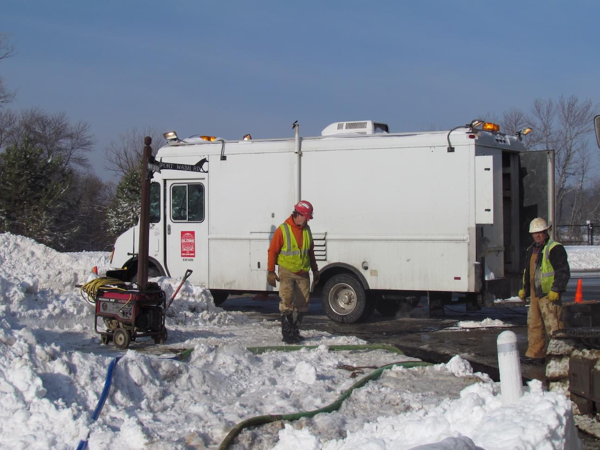

Emergency Services
- 
General Emergency Services
Since 1971, Globe has provided emergency services for communities throughout southeastern Wisconsin. Being that weather in Wisconsin is known to be brutally frigid during the winter months, the inevitable expansion and contraction of the pipes leads to water main breaks, among other issues. If you encounter an incident requiring emergency action, we will make every effort to dispatch a crew 24/7 in order to fix an unexpected problem in a timely and cost-effective manner. Our goal is to limit the impact to customers, the environment, potential property damage, and unsafe traffic conditions due to street flooding. Please contact us if you’re interested in learning more about how we can be of service to you.
Water Main Break in the Menomonee River
Wauwatosa, WI
The replacement of water main under rivers is unique on a case by case basis. Here there was 160 feet of pipe from the year 1940 that needed to be replaced. After assessing the damage and reviewing all possible options, we deemed it best to use a combination of trenchless methods to get the job done. First we had to construct and seal off the launch and receiving pits on each river bank to a depth of roughly 14 feet. The sealing off proved to be easier said than done, but once the water was under control, we were able to use our Akkerman GBM 240A to guide a pilot tube across. The operator is able to steer in order to ensure an accurate line and grade by watching a monitor that picks up on an LED illuminated target embedded in the lead tube. Next, using our Grundoram 18” Goliath we pneumatically pipe rammed our 24” steel casing across the river following the guidance of the pilot tube. We decided to pipe ram rather than auger bore so that the dirt inside the casing would act as a plug. Once the casing was through we augured out the dirt and installed the brand new 12” water main inside.